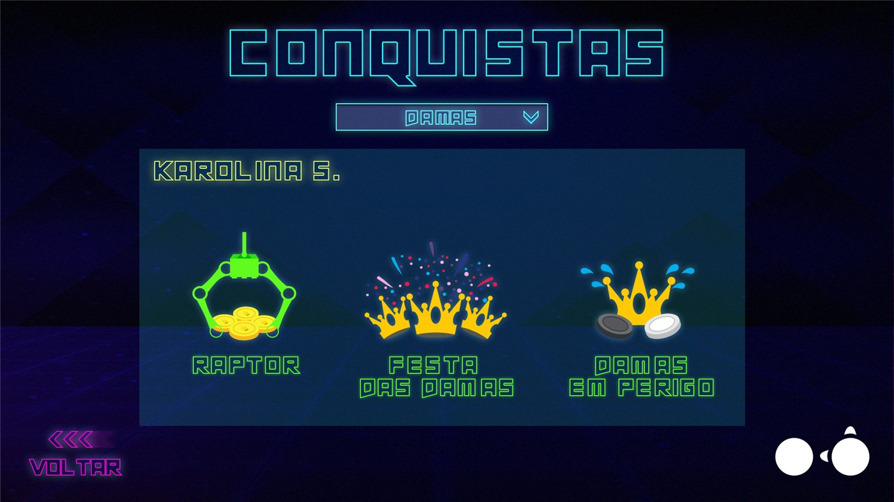
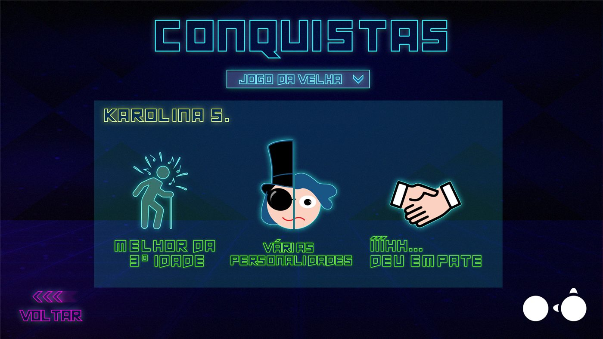
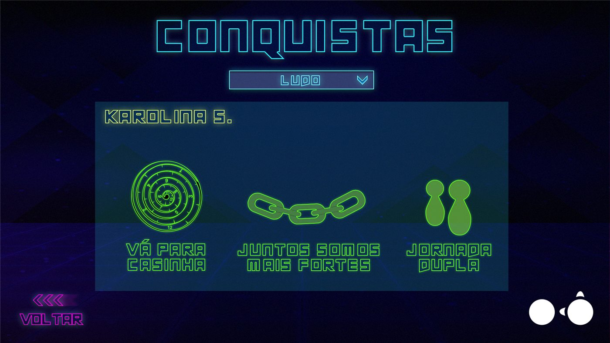
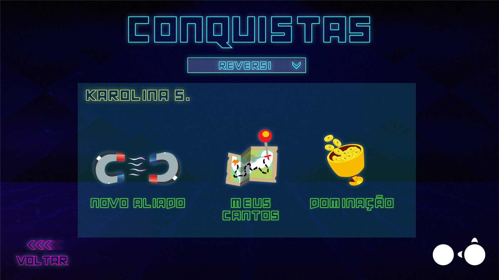
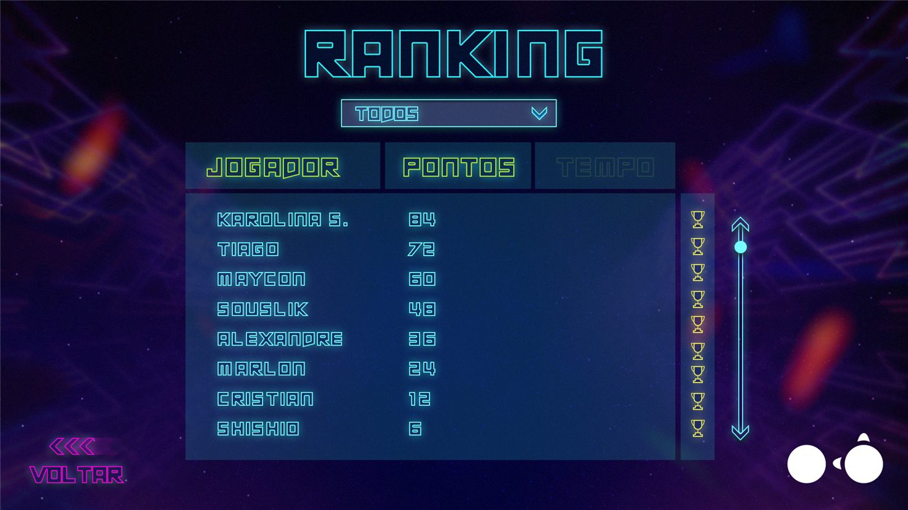

Divertron é uma coleção de jogos de tabuleiro clássicos em versões digitais para jogadores a partir de 5 anos, na PlayTable, a mesa interativa da Playmove. Foi criado para levar os jogos tradicionais ao ambiente digital nas escolas. Os jogadores podem enfrentar uns aos outros ou a máquina, em diferentes níveis de dificuldade.
Participei de todas as etapas do Divertron, como a única game designer de um time de três pessoas. A ideia era levar os jogos de tabuleiro clássicos ao ambiente digital nas escolas, escolhendo os que combinavam com a proposta multiplayer da PlayTable. O jogo continua disponível até hoje.
O Divertron reúne diferentes jogos, cada um com seu jeito de jogar: Damas, Reversi e Jogo da Velha para dois jogadores e Ludo para até quatro. Oferecer uma variedade de clássicos na mesma plataforma atende momentos e grupos diferentes: uma partida rápida de Jogo da Velha, um jogo de estratégia mais longo de Damas ou Reversi, ou um jogo social de Ludo para a mesa toda. Cada jogo mantém as regras que os jogadores já conhecem, então a curva de aprendizado é baixa, enquanto a versão digital acrescenta o que a mesa faz bem: cronômetro, regras automáticas, pontuação e um adversário com níveis de dificuldade.
Cada jogo tem suas próprias conquistas, que recompensam diferentes formas de jogar e incentivam o jogador a explorar. As conquistas dão ao jogador metas além de vencer, de desafios divertidos a metas de maestria; recompensam a curiosidade e a habilidade; e incentivam a rejogar, já que sempre há algo a desbloquear. Em uma coleção de jogos clássicos, elas também dão a cada um uma camada própria, e um jogo que o jogador já conhece ainda tem algo novo a oferecer.




O ranking mostra os pontos e os tempos dos jogadores, com um filtro por jogo. Ele dá ao jogador uma forma de medir o progresso e um motivo para tentar de novo: ver o próprio nome subir, ou um nome para ultrapassar, transforma cada partida em um passo rumo a uma meta. Em uma escola ou em qualquer espaço compartilhado, ele também cria uma competição amigável e um senso de comunidade em torno do jogo, e prolonga a vida de cada jogo.

Nem todo jogo de tabuleiro clássico funciona bem em uma mesa interativa. Os critérios foram a afinidade com a proposta digital e multiplayer da plataforma e a possibilidade de construir uma boa IA para o jogo. Isso resultou em uma coleção com jogos para dois jogadores e um, o Ludo, para até quatro.
Para que a máquina fosse uma adversária justa, seu comportamento foi construído com regras lógicas: prioridades e jogadas vantajosas que ela avalia a cada turno. Sobre essa base, o jogo oferece diferentes níveis de dificuldade, para que o mesmo jogo atenda jogadores com experiências diferentes.
Com jogadores a partir de 5 anos, uma dificuldade alta demais é tão problemática quanto uma baixa demais. As IAs passaram por várias rodadas de playtestes justamente para verificar se cada nível era adequado ao público, e foram ajustadas até que fosse.
O Divertron foi um sucesso de vendas, tanto no âmbito escolar quanto no de entretenimento. Ele continua disponível na PlayTable até hoje.
Neste jogo, regras conhecidas e um adversário bem ajustado foram o que fez os clássicos funcionarem em uma mesa digital.